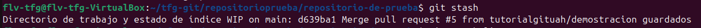
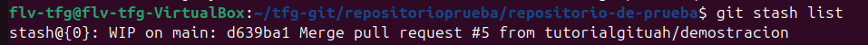
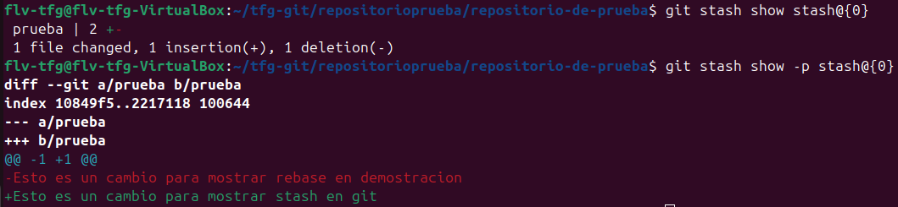

git stashEl comando git stash se utiliza para guardar temporalmente cambios que no estás preparado para confirmar. Es útil cuando necesitas cambiar de rama sin hacer commit de cambios incompletos, o cuando quieres limpiar tu área de trabajo sin perder el trabajo realizado.

Guardar cambios en stash
Para guardar todos tus cambios sin confirmar:
git stash
O con un mensaje descriptivo:
git stash save "Descripción de tus cambios"
Esto elimina tus cambios del directorio de trabajo y los guarda temporalmente.

Ver los stash guardados
Para ver una lista de todos tus stash:
git stash list
Verás algo como:
stash@{0}: WIP on main: abcd123 Mi último commit
stash@{1}: WIP on mi_rama_1: ef56789 Otro commit

Ver los cambios en un stash específico
Para ver qué cambios contiene un stash:
git stash show stash@{0}
O para ver en más detalle:
git stash show -p stash@{0}
Recuperar cambios del stash
Para recuperar los cambios más recientes:
git stash pop
O para recuperar un stash específico:
git stash pop stash@{1}
Nota: pop aplica los cambios y elimina el stash. Si hay conflictos, deberás resolverlos manualmente.
Aplicar cambios sin eliminar el stash
Para aplicar cambios pero mantener el stash:
git stash apply
O para un stash específico:
git stash apply stash@{0}
Esto es útil si quieres aplicar los mismos cambios en múltiples ramas.
Eliminar stash
Para eliminar el stash más reciente:
git stash drop
O para eliminar un stash específico:
git stash drop stash@{1}
Para eliminar todos los stash:
git stash clear
En la ventana de control de git dentro de VSCode, no hay interfaz gráfica directa para stash. Deberás abrir la terminal integrada y ejecutar los comandos git stash mencionados anteriormente. Sin embargo, puedes ver los cambios sin confirmar en la sección "Source Control" antes de ejecutar el comando.
Para hacer stash en VSCode:
Ctrl+`git stash o git stash save "tu descripción"git stash listPara recuperar cambios del stash en VSCode:
git stash pop para recuperar el más recientegit stash apply stash@{n} para recuperar un stash específico